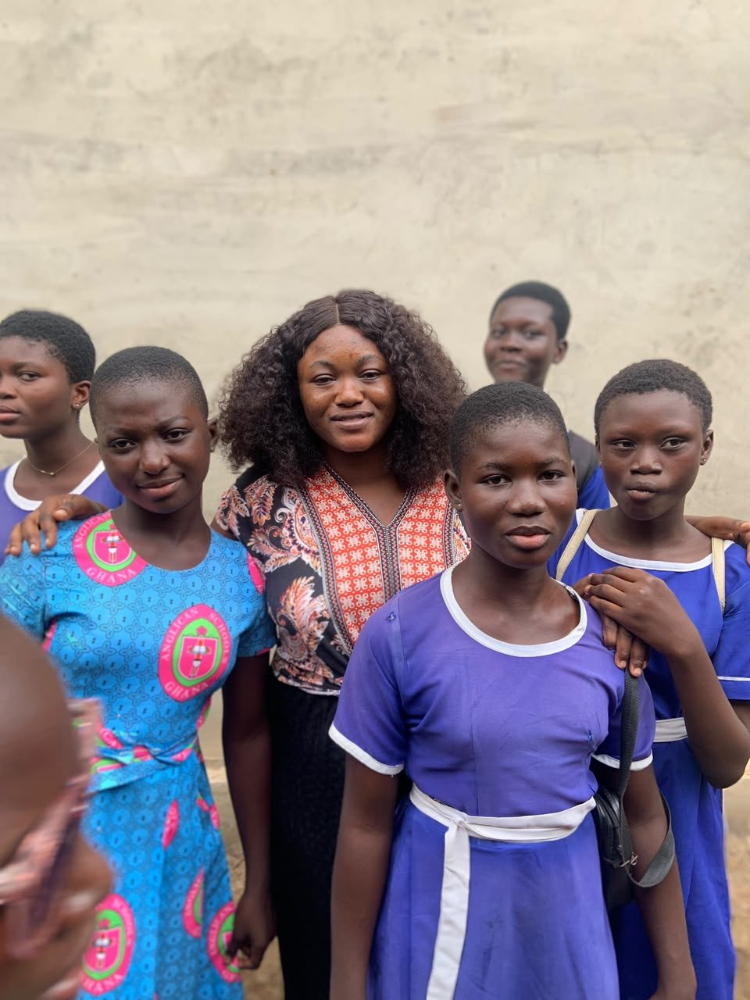
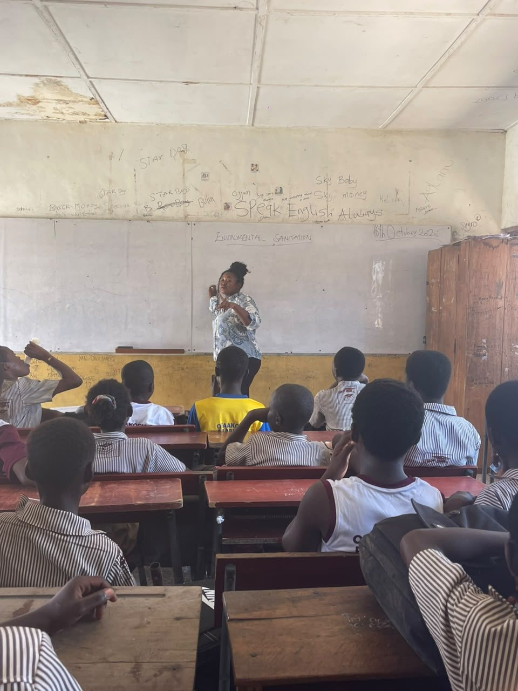
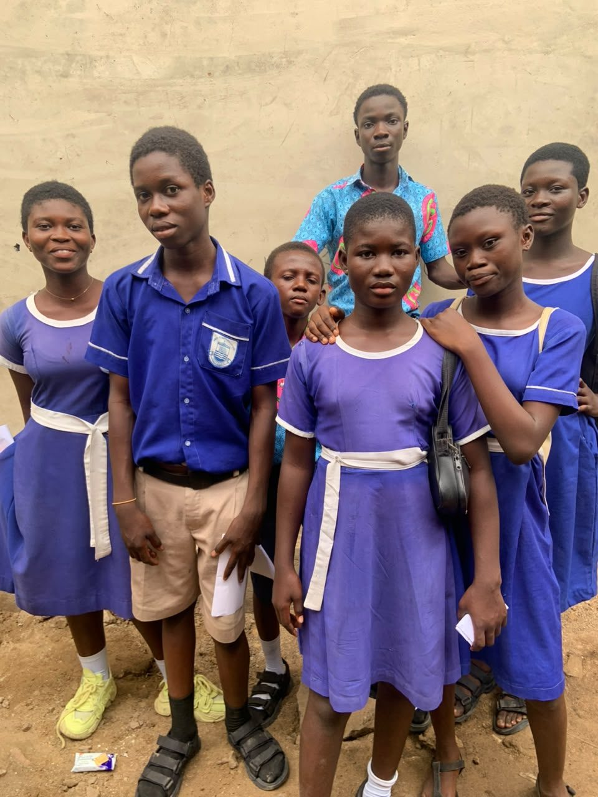
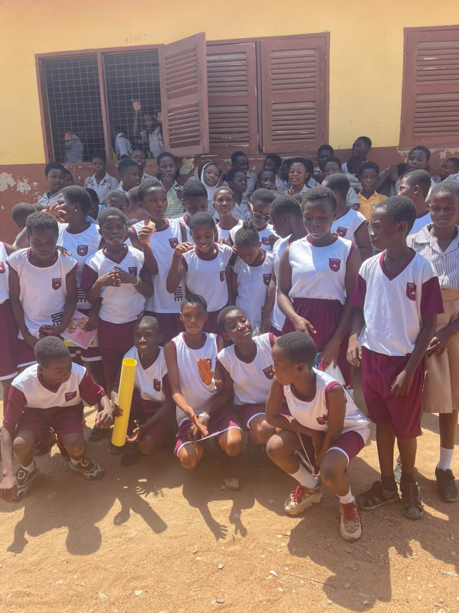
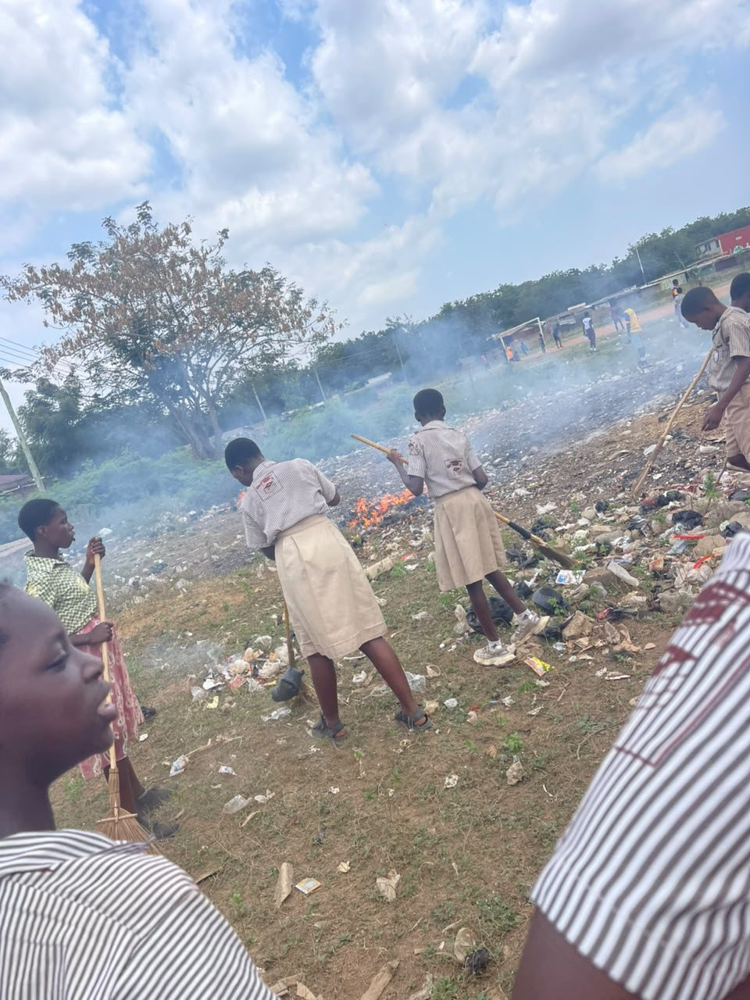
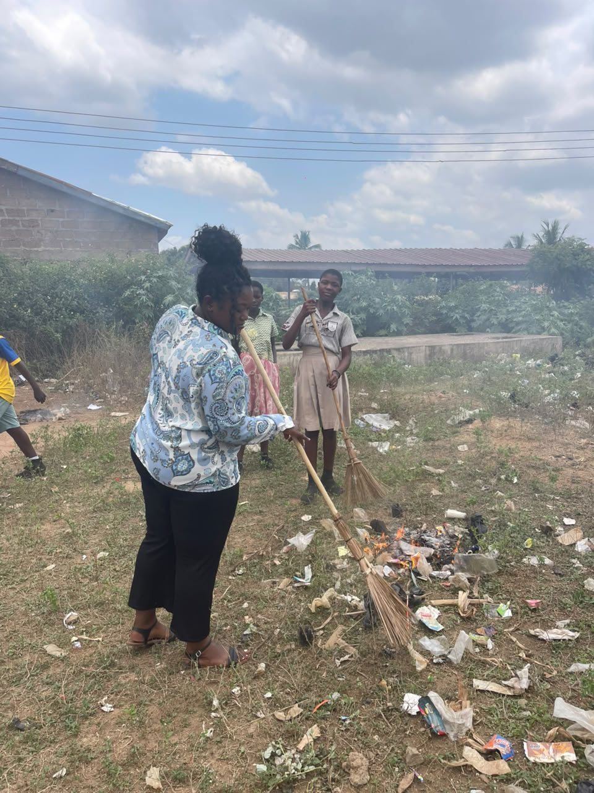

Internship & Practicum
My teaching practice has taken me to two schools. This section highlights each placement, what I did there, and what I learned about teaching and school life.
St Mary's Anglican School
Year One School Observation · 2024/2025

Ofaakor M/A Basic C (JHS)
Year Two Placement · 2025/2026

About St Mary's
St Mary's Anglican School, Akweley was established in the 1994/1995 academic year and officially opened on 1st September 1994. It has two kindergarten classrooms, seven primary classrooms and six JHS classrooms, and has been led by nine headteachers since it was founded.
The school works closely with the Anglican Church, the Member of Parliament for Awutu Senya East, the municipal assembly, the chiefs and people of Akweley, and its School Management Committee.

About Ofaakor Basic C
Ofaakor Basic C was established on 2nd October 1990 as a Junior Secondary School with just 15 pupils: 7 boys and 8 girls. A primary department was added in 2021, making it a full basic school. Today it has 522 learners and 21 teaching staff, with a library, a school field and six JHS classrooms.
The school works with its Parent-Teacher Association, the chiefs and people of Ofaakor, the School Management Committee and the Member of Parliament for Awutu Senya East.

Main Responsibilities
- Observed lessons and teacher–learner interactions in and outside the classroom.
- Took part in morning assembly and Wednesday morning devotion.
- Supervised learners during break time and helped maintain discipline.
- Took part in school clean-up activities.
- Helped supervise tests.
Goals of the Internship
- Gain practical teaching experience in a real school.
- Build my confidence in front of learners.
- Learn how to make lessons meaningful and engaging for different learners.
- Watch closely how teachers manage the classroom, ask questions and support learners with different abilities.
Environmental Sanitation Field Trip
For my JHS 1 Social Studies lesson on Environmental Sanitation, I planned a practical learning activity: a field trip. Instead of only hearing about a clean environment in the classroom, learners put the lesson into practice by sweeping, picking up litter and gathering rubbish together.


Supporting Learners: A Classroom Enquiry
At Ofaakor, I carried out a small-scale classroom enquiry with four learners, identifying their learning needs and suggesting ways to address them.
Poor reading skills
Encourage daily reading and practice.
Low attention during lessons
Use interactive teaching methods and questioning.
Difficulty solving exercises
Give practice questions with guidance.
Difficulty understanding some topics
Use simple explanations.
Challenges & Solutions
I'm putting together the challenges I faced during my internship and how I handled them.
Core Values in Practice
At Ofaakor, I saw inclusivity and respect for language diversity in action. My mentor explained concepts in Fante to help most of the class understand, then repeated the explanation in English so that a Nigerian learner who did not understand Fante could also follow the lesson.
It showed me that fairness means making sure every learner has a way into the lesson.
Wider School Life
At Ofaakor, I saw a strong culture of discipline, neatness, punctuality and respect. Learners greeted teachers respectfully, came to school early and stayed in their classrooms during lesson hours.
Outside the classroom, learners took part in football, music lessons, singing during assembly and sanitation exercises. These activities helped them build teamwork, leadership skills, confidence, discipline and physical fitness, and showed me that school life is not only about lessons.
Skills & Learning Outcomes
Related Reflections
Read my reflections from both placements, including key lessons learned and how they shaped my growth.